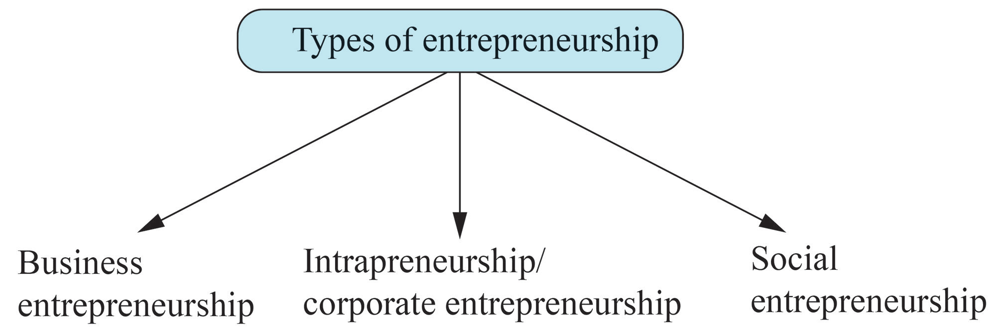

the community, develop business ideas, and take personal responsibility and initiatives to start and run a business. The business opportunities can either be created or discovered and used by individuals who have unique mental abilities and attitudes for profit making.
Types of entrepreneurship
Entrepreneurship is classified differently by various scholars. However, in this text book, three types of entrepreneurship are explained. These are business entrepreneurship, intrapreneurship or corporate entrepreneurship, and social entrepreneurship. These types cover the fundamentals of starting a business and focus more on the business itself, rather than on qualities of an entrepreneur. Figure 2.1 presents the three types of entrepreneurship.

Business entrepreneurship: This is a type of entrepreneurship that begins with the identification of business opportunity, generation of business idea, setting-up of the business entity, and running a business with a purpose of making profit. It involves making investment and taking risk upon any decision made for the successful operation of the organisation. Business entrepreneurship is the most common type of entrepreneurship widely seen in the world. It generally exists in most Small and Medium Enterprises (SMEs). The majority of the small and medium-sized enterprises in Tanzania belong to this kind of entrepreneurship. It contributes to the nation’s economy in terms of paying tax, providing jobs and value-added initiatives. Most of the entrepreneurs typically start their businesses using their savings or small loans from banks, friends or family. Local grocery stores, tea shops, plumbers, electricians, barbers, carpenters, and consultants are examples of these businesses.
In this kind of entrepreneurship, people usually want to earn enough profit to feed their families and meet their other basic needs. The business owner usually employs local employees or family members. These small businesses which are mostly owned and operated by individuals are likely to expand into a large-scale business.